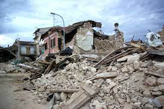
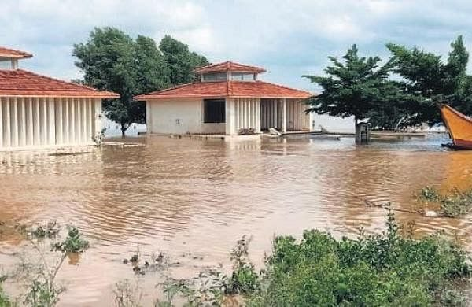
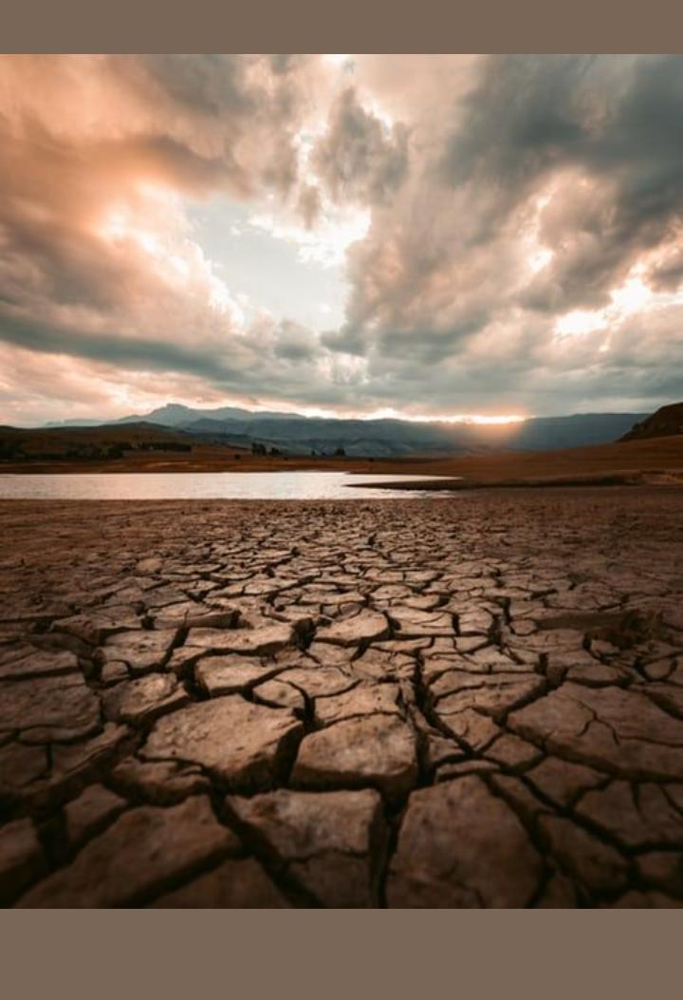

1.Precautions Should Take When Cyclone Occurs:
Before the Cyclone season:
Check the house; secure loose tiles and carry out repairs of doors and windows Remove dead branches or dying trees close to the house; anchor removable objects such as lumber piles, loose tin sheets, loose bricks, garbage cans, sign-boards etc. which can fly in strong winds Keep some wooden boards ready so that glass windows can be boarded if needed Keep a hurricane lantern filled with kerosene, battery operated torches and enough dry cells Demolish condemned buildings Keep some extra batteries for transistors Keep some dry non-perishable food always ready for use in emergency Necessary actions
The actions that need to be taken in the event of a cyclone threat can broadly be divided into :
Immediately before the cyclone season When cyclone alerts and warnings are communicated When evacuations are advised When the cyclone has crossed the coast
Post-cyclone measures:
You should remain in the shelter until informed that you can return to your home. You must get inoculated against diseases immediately. Strictly avoid any loose and dangling wires from lamp posts. If you have to drive, do drive carefully. Clear debris from your premises immediately. Report the correct losses to appropriate authorities.
2.Precautions Should Take When Earthquake Occurs:
Before the Earthquake season:
Prepare for three to seven days of electricity, water, gas, and telephone outages. Keep an earthquake disaster kit on hand, including a well-stocked first aid kit a supply of medicines required for life-threatening conditions, copies of important documents, extra money, a flashlight, a hand crank or solar-powered radio, extra batteries, blankets, drinking water and nonperishable food, and tools to shut off utilities. Store the kit in a secure, waterproof location that is easily accessible. Conduct calm family discussions about earthquakes. Decide upon an outdoor meeting location for your family to reunite after a quake and conduct in-home practice drills. Teach your household members to knock three times repeatedly if they were to become trapped inside your home. Conduct a thorough investigation of your home, checking for any defective wiring, leaky gas connections, and deep cracks in the ceiling or foundation that could pose a danger during a quake. Install flexible, corrugated pipe fittings to avoid gas and water leaks. Flexible fittings are more resistant to breakage. If recommended by your gas service provider, have an automatic gas shutoff installed that can be triggered by strong vibrations. Learn how to shut off all utilities in your home. Use bolts or straps to secure heavy items that may topple over, such as a bookcase, china cabinet, or water heater. Store heavy, hazardous, or flammable materials on low shelves or in secure cabinets. If you are a renter, ask your landlord to secure furniture and water heaters to the wall. Avoid placing heavy objects, such as shelves and picture frames, on walls where they could fall onto a bed or locations where your family would be sitting. Hang objects from closed hooks and secure corners with earthquake putty. Secure cabinet doors with latches to prevent items from falling out during an earthquake.
During Earthquake:
Drop, Cover, and Hold on! Drop to the floor, get under a sturdy table, and hold on until the shaking stops. If your entire body does not fit underneath the furniture, position your body so that at least your head and neck are covered. If indoors, stay there; most injuries occur when people inside try to move to a different location or try to leave. Avoid windows, exterior walls, stairwells, elevators, and objects that could fall. Be aware that the electricity may go out and the fire alarm or sprinkler system may turn on. If outside, get into an open area. Stay clear of buildings, power lines, streetlights, and anything that can fall on you. If driving, move out of traffic as quickly as possible and shut off the engine. Avoid bridges and overpasses, and anything that could fall onto your car, such as trees, light posts, powerlines, and signs. If in bed, stay there. Hold on and protect your head with a pillow. Only move to a nearby safe place if you are under a heavy light fixture or something that may fall on you. If in a wheelchair, stay in it. Move to a safe location, lock your wheels, and cover your head and neck.
Post-Earthquake measures:
Go to your predetermined outdoor meeting location. Check for injuries to others and provide assistance as needed. Check for and extinguish small fires. Clean up any spilled flammable liquids immediately. If you smell gas or hear a hissing sound, open a window and quickly leave the building. Shut off the main gas valve only if you suspect a gas leak. Return home only when it is declared safe. Once gas lines are turned off, service should be restored only by your service provider. Check appliances and electric lines for damage. Unplug any damaged appliances or light fixtures, and shut off power at the main fuse box if there are sparks, frayed wires, or if you smell something burning. Check for sewage and water line damage. If you suspect damage, avoid using the toilet until you call a plumber. Watch out for items that may have shifted in cabinets or closets that can cause further damage or injury upon opening the doors. If you are trapped under debris, do not light a match or move about. Cover your mouth with clothing and tap on a pipe or wall so rescuers can locate you. Only shout as a last resort, as it can cause you to inhale dangerous amounts of dust. If you are driving, watch out for road hazards, including fallen trees, power lines, and damaged bridges and roads. If a power line fell onto your car during the earthquake, stay inside until trained personnel remove the wire. Use the telephone only for emergencies. 911 systems will be overloaded after an earthquake. Keep the phone lines clear for emergency calls to get through.
3.Precautions Should Take When Floods Occurs:
Before the Floods season:
Build an emergency kit and make a family communications plan. Avoid building in a floodplain unless you elevate and reinforce your home. Elevate the furnace, water heater and electric panel in your home if you live in an area that has a high flood risk. Consider installing "check valves" to prevent flood water from backing up into the drains of your home. If feasible, construct barriers to stop floodwater from entering the building and seal walls in basements with waterproofing compounds. During a Flood
If a flood is likely in your area, you should:
Listen to the radio or television for information. Be aware that flash flooding can occur. If there is any possibility of a flash flood, move immediately to higher ground. Do not wait for instructions to move. Be aware of stream, drainage channels, canyons and other areas known to flood suddenly. Flash floods can occur in these areas with or without typical warnings such as rain clouds or heavy rain. If you must prepare to evacuate, you should do the following: Secure your home. If you have time, bring in outdoor furniture. Move essential items to an upper floor. Turn off utilities at the main switches or valves if instructed to do so. Disconnect electrical appliances. Do not touch electrical equipment if you are wet or standing in water.
Post-Floods measures:
Your home has been flooded. Although floodwaters may be down in some areas, many dangers still exist. Here are some things to remember in the days ahead: Avoid moving water. Stay away from damaged areas unless your assistance has been specifically requested by police, fire, or relief organization. Emergency workers will be assisting people in flooded areas. You can help them by staying off the roads and out of the way. Play it safe. Additional flooding or flash floods can occur. Listen for local warnings and information. If your car stalls in rapidly rising waters, get out immediately and climb to higher ground. Return home only when authorities indicate it is safe. Roads may still be closed because they have been damaged or are covered by water. Barricades have been placed for your protection. If you come upon a barricade or a flooded road, go another way. If you must walk or drive in areas that have been flooded. Stay on firm ground. Moving water only 6 inches deep can sweep you off your feet. Standing water may be electrically charged from underground or downed power lines. Flooding may have caused familiar places to change. Floodwaters often erode roads and walkways. Flood debris may hide animals and broken bottles, and it's also slippery. Avoid walking or driving through it. Be aware of areas where floodwaters have receded. Roads may have weakened and could collapse under the weight of a car. Stay out of any building if it is surrounded by floodwaters. Use extreme caution when entering buildings; there may be hidden damage, particularly in foundations

4.Precautions Should Take When Heat Waves Occurs:
Do's & Dont's:
Heat Wave conditions can result in physiological strain, which could even result in death. To minimise the impact during the heat wave and to prevent serious ailment or death because of heat stroke, you can take the following measures: Avoid going out in the sun, especially between 12.00 noon and 3.00 p.m. Drink sufficient water and as often as possible, even if not thirsty Wear lightweight, light-coloured, loose, and porous cotton clothes. Use protective goggles, umbrella/hat, shoes or chappals while going out in sun. Avoid strenuous activities when the outside temperature is high. Avoid working outside between 12 noon and 3 p.m. While travelling, carry water with you. Avoid alcohol, tea, coffee and carbonated soft drinks, which dehydrates the body. Avoid high-protein food and do not eat stale food. If you work outside, use a hat or an umbrella and also use a damp cloth on your head, neck, face and limbs Do not leave children or pets in parked vehicles If you feel faint or ill, see a doctor immediately. Use ORS, homemade drinks like lassi, torani (rice water), lemon water, buttermilk, etc. which helps to re-hydrate the body. Keep animals in shade and give them plenty of water to drink. Keep your home cool, use curtains, shutters or sunshade and open windows at night. Use fans, damp clothing and take bath in cold water frequently. TIPS FOR TREATMENT OF A PERSON AFFECTED BY A SUNSTROKE: Lay the person in a cool place, under a shade. Wipe her/him with a wet cloth/wash the body frequently. Pour normal temperature water on the head. The main thing is to bring down the body temperature. Give the person ORS to drink or lemon sarbat/torani or whatever is useful to rehydrate the body. Take the person immediately to the nearest health centre. The patient needs immediate hospitalisation, as heat strokes could be fatal.
5.Precautions Should Take When Droughts Occurs:
Before the Droughts season:
Make water conservation practices a part of your daily life and help preserve this essential resource. Indoor Water Conservation Tips Prior to a Drought General Never pour water down the drain when there may be another use for it. For example, use it to water your indoor plants or garden. Repair dripping faucets by replacing washers. One drop per second wastes 2,700 gallons of water per year. Check all plumbing for leaks and have any leaks repaired by a plumber. Retrofit all household faucets by installing aerators with flow restrictors. Install an instant hot water heater on your sink. Insulate your water pipes to reduce heat loss and prevent them from breaking. Install a water-softening system only when the minerals in the water would damage your pipes. Turn the softener off while on vacation. Choose appliances that are more water and energy efficient. Bathroom Install a low-volume toilet that uses less than half the water of older models. Note: In some areas, low-volume units are required by law. For toilets with larger water tanks, install a toilet displacement device to reduce the amount of water needed to flush. Replace your showerhead with an ultra-low-flow version. Kitchen Reduce use of sink disposals, which require a lot of water to operate properly. Instead, start a compost pile as an alternate method of disposing of food waste or simply dispose of food in the garbage. Outdoor Water Conservation Tips Prior to a Drought